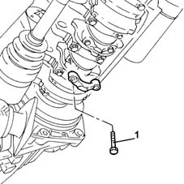
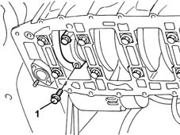
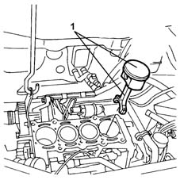
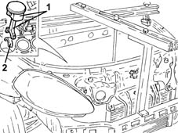
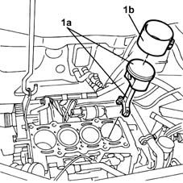
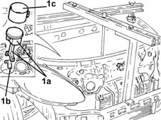
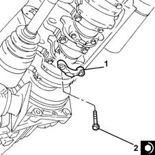
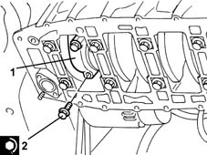

1028H20 piston with connecting rod - r r
- Path
- Procedures > 10 ENGINE > 1028 PISTONS AND CONNECTING RODS > 1028H pistons and connecting rods > 1028H20 piston with connecting rod - r r
- Kind
- repair procedure (removal / refitting; the operation number is the code)
- Applies to
- all engines; all production periods
- Interactive page
- https://sloeber94.github.io/elrnDB-lYpsln/en/#/2428880
Applies to: engines: 1.2 8v; all production periods
 Removing
Removing
 Refitting
RefittingPlace the car on a lift.
Proceed with removal 5530B10 battery - r+r .
Proceed with removal 5530B52 Battery DRIP TRAY/SUPPORT - R.R. .
Proceed with removal 1048A10 air cleaner filtering element - replace .
Proceed with removal 1072C44 exhaust manifold heat shield on bulkhead - r+r .
Proceed with removal 1072C16 exhaust manifold with catalytic converter - r r .
Proceed with removal 4450B04 right front wheel r r .
Proceed with removal 7055B66 Engine compartment DUST SHIELD protection in right front wheel arch - R.R. .
Proceed with removal 7055B91 Right front WHEEL ARCH LINER - R.R. .
Proceed with removal 1008B10 power unit front mount (timing side) flexible block - replace .
Proceed with removal 1008A46 cam shaft left rigid mount - r r .
Proceed with removal 1032D12 timing system protective cover(s) - r + r .
Proceed with removal 1092B40 air conditioner compressor/alternator drive belt - r + r .
Proceed with removal 1092A10 Crankshaft services PULLEY - R.R. .
Proceed with removal 1032B10 toothed timing belt - r + r for timing adjustment or replacement .
Proceed with removal 1016C10 cylinder head - r + r and replace gasket .
Proceed with removal 2110A60 manual gearbox/engine coupling bracket - r+r .
Proceed with removal 1020A20 crank case oil sump - r + r clean seals for sealant application .
Proceed with removal 1084B28 engine oil intake pump - r + r with crankcase sump removed .
1. Undo the bolts securing the piston connecting rod cap in question complete with the bearing half.

Applies to: engines: 1.2 16v; all production periods
.
Applies to: engines: 1.4 16v; all production periods
Removing
RefittingProceed with removal 4450B04 right front wheel r r .
Proceed with removal 7055B66 Engine compartment DUST SHIELD protection in right front wheel arch - R.R. .
Proceed with removal 7055B91 Right front WHEEL ARCH LINER - R.R. .
Proceed with removal 1092B40 air conditioner compressor/alternator drive belt - r + r .
Proceed with the removal.
Proceed with removal 1048A10 air cleaner filtering element - replace .
Proceed with removal 1056B60 single fuel manifold pipe, with injectors - r + r .
Proceed with removal 1032B10 toothed timing belt - r + r for timing adjustment or replacement .
Proceed with removal 5530B10 battery - r+r .
Proceed with removal 5530B52 Battery DRIP TRAY/SUPPORT - R.R. .
Proceed with removal 1072C44 exhaust manifold heat shield on bulkhead - r+r .
Proceed with removal 1072C16 exhaust manifold with catalytic converter - r r .
Proceed with removal 1016B12 single cylinder head extension - r r with timing belt removed - replace .
Proceed with removal 1016C10 cylinder head - r + r and replace gasket .
Proceed with removal 1020A20 crank case oil sump - r + r clean seals for sealant application .
Proceed with removal 1084B28 engine oil intake pump - r + r with crankcase sump removed .
1. Undo bolts and remove big end bearing caps complete with bearing shell.

Applies to: engines: 1.3 JTD; all production periods
Removing
RefittingProceed with the removal 1028H10 connecting rod and piston set - r r , bearing in mind to only work on the cylinder involved.
Applies to: engines: 1.2 8v; all production periods
1. Remove the piston complete with connecting rod.
Remove the big end bearing shell.

Applies to: engines: 1.4 16v; all production periods
1. Remove the piston complete with connecting rod.
2. Remove the big end bearing shell.

Applies to: engines: 1.3 JTD; all production periods
Refitting
RemovingProceed with the refitting 1028H10 connecting rod and piston set - r r , bearing in mind to only work on the cylinder involved.
Applies to: engines: 1.2 8v; all production periods
Refitting
Removing1. Refit the piston - connecting rod assembly (1a), complete with half-bearing, using the tool (1b).

Applies to: engines: 1.4 16v; all production periods
Refitting
Removing1. Refit the piston-connecting rod assemblies (1a) complete with bearing halves (1b) using a suitable tool (1c).

Applies to: engines: 1.2 8v; all production periods
1. Place the connecting rod cap, complete with half-bearing, back in its housing.
2. Tighten the bolts fixing the connecting rod caps to the recommended torque using the angular tightening tool.
 | Fastening | Component | Ø | Value (daNm) |
|---|---|---|---|---|
2 | Bolt | BIG END BEARING CAPS | M8 | 2 + 40° |
 | Name | Country |
|---|---|---|
- | Protractor | 1.860.942.000 |

Applies to: engines: 1.4 16v; all production periods
1. Place the connecting rod cap, complete with half-bearing, back in its housing.
2. Tighten the bolts fixing the connecting rod caps to the recommended torque using the angular tightening tool.
| Fastening | Component | Ø | Value (daNm) |
|---|---|---|---|---|
2 | Bolt | BIG END BEARING CAPS | M8 | 2 + 40° |
| Name | Country |
|---|---|---|
- | Protractor | 1.860.942.000 |

Applies to: engines: 1.2 8v; all production periods
Proceed with refitting 1084B28 engine oil intake pump - r + r with crankcase sump removed .
Proceed with refitting 1020A20 crank case oil sump - r + r clean seals for sealant application .
Proceed with refitting 2110A60 manual gearbox/engine coupling bracket - r+r .
Proceed with refitting 1016C10 cylinder head - r + r and replace gasket .
Proceed with refitting 1032B10 toothed timing belt - r + r for timing adjustment or replacement .
Proceed with refitting 1092A10 Crankshaft services PULLEY - R.R. .
Proceed with refitting 1092B40 air conditioner compressor/alternator drive belt - r + r .
Proceed with refitting 1032D12 timing system protective cover(s) - r + r .
Proceed with refitting 1008A46 cam shaft left rigid mount - r r .
Proceed with refitting 1008B10 power unit front mount (timing side) flexible block - replace .
Proceed with refitting 7055B91 Right front WHEEL ARCH LINER - R.R. .
Proceed with refitting 7055B66 Engine compartment DUST SHIELD protection in right front wheel arch - R.R. .
Proceed with refitting 4450B04 right front wheel r r .
Proceed with refitting 1072C16 exhaust manifold with catalytic converter - r r .
Proceed with refitting 1072C44 exhaust manifold heat shield on bulkhead - r+r .
Proceed with the refitting 1068A10 accelerator pedal control - check, adjust if necessary and lubricate
Proceed with refitting 1048A10 air cleaner filtering element - replace .
Proceed with refitting 5530B52 Battery DRIP TRAY/SUPPORT - R.R. .
Proceed with refitting 5530B10 battery - r+r .
Refill the engine oil lubrication system 0010T11 engine oil check level and top up .
Refill the engine cooling system with coolant 0010T20 coolant change .
Remove the car from the ramps.
Applies to: engines: 1.4 16v; all production periods
Proceed with refitting 1084B28 engine oil intake pump - r + r with crankcase sump removed .
Proceed with refitting 1020A20 crank case oil sump - r + r clean seals for sealant application .
Proceed with refitting 1016C10 cylinder head - r + r and replace gasket .
Proceed with refitting 1016B12 single cylinder head extension - r r with timing belt removed - replace .
Proceed with refitting 1072C16 exhaust manifold with catalytic converter - r r .
Proceed with refitting 1072C44 exhaust manifold heat shield on bulkhead - r+r .
Proceed with refitting 5530B52 Battery DRIP TRAY/SUPPORT - R.R. .
Proceed with refitting 5530B10 battery - r+r .
Proceed with refitting 1032B10 toothed timing belt - r + r for timing adjustment or replacement .
Proceed with refitting 1056B60 single fuel manifold pipe, with injectors - r + r .
Proceed with refitting 1048A10 air cleaner filtering element - replace .
Proceed with the refitting.
Proceed with refitting 1092B40 air conditioner compressor/alternator drive belt - r + r .
Proceed with refitting 7055B91 Right front WHEEL ARCH LINER - R.R. .
Proceed with refitting 7055B66 Engine compartment DUST SHIELD protection in right front wheel arch - R.R. .
Proceed with refitting 4450B04 right front wheel r r .
Refill the engine oil lubrication system 0010T11 engine oil check level and top up .
Refill the engine cooling system with coolant 0010T20 coolant change .
Topics linked from this page (24)
- 0010T11 engine oil check level and top up
- 0010T20 coolant change
- 1008A46 cam shaft left rigid mount - r r
- 1008B10 power unit front mount (timing side) flexible block - replace
- 1016B12 single cylinder head extension - r r with timing belt removed - replace
- 1016C10 cylinder head - r + r and replace gasket
- 1020A20 crank case oil sump - r + r clean seals for sealant application
- 1028H10 connecting rod and piston set - r r
- 1032B10 toothed timing belt - r + r for timing adjustment or replacement
- 1032D12 timing system protective cover(s) - r + r
- 1048A10 air cleaner filtering element - replace
- 1056B60 single fuel manifold pipe, with injectors - r + r
- 1068A10 accelerator pedal control - check, adjust if necessary and lubricate
- 1072C16 exhaust manifold with catalytic converter - r r
- 1072C44 exhaust manifold heat shield on bulkhead - r+r
- 1084B28 engine oil intake pump - r + r with crankcase sump removed
- 1092A10 Crankshaft services PULLEY - R.R.
- 1092B40 air conditioner compressor/alternator drive belt - r + r
- 2110A60 manual gearbox/engine coupling bracket - r+r
- 4450B04 right front wheel r r
- 5530B10 battery - r+r
- 5530B52 Battery DRIP TRAY/SUPPORT - R.R.
- 7055B66 Engine compartment DUST SHIELD protection in right front wheel arch - R.R.
- 7055B91 Right front WHEEL ARCH LINER - R.R.